This another Tino's personal list, which contains records that we love very much, even if they aren't really at “audiophile-grade”.
|
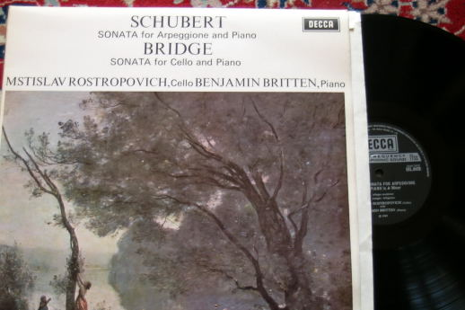 DECCA SXL6426 NB Schubert “Arpeggione” sonata + Bridge sonata per cello and piano Mstislav Rostropovich and Benjamin Britten Sound eng. ? This Arpeggione interpretation is my favourite. Slava is simply fabulous! |
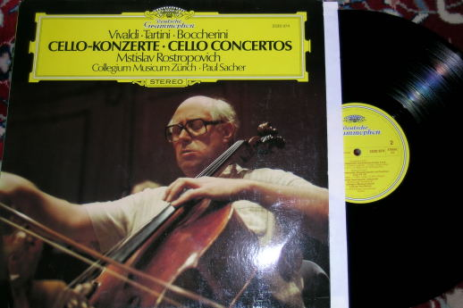 DGG 2530974 Vivaldi,Tartini, Boccherini cello concertoes Mstislav Rostropovich Paul Sacher Collegium Musicum Zurich Sound eng. Klaus Scheibe This is another great Slava record. I'm also a fan of Boccherini. |
|---|---|
|
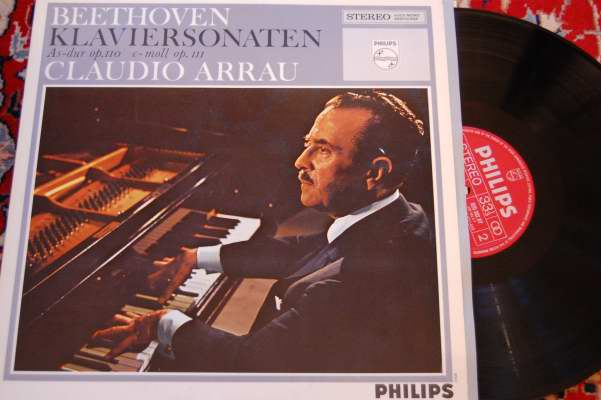 PHILIPS 835382AY Beethoven piano sonatoes n.31 & 32, op.110 & 111 Claudio Arrau Sound eng. M. Gray I like very much this music and I think the Arrau interpretation is th ebest I have ever listened. The last Beethoven sonata is very famous, but I think that the end of the 31 (Adagio ma non troppo) is something really astonishing, with its final fuga so well played by the cilean pianist. |
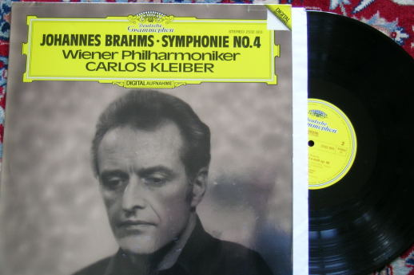 DGG 2532003 Brahms symphony n4 Carlos Kleiber Wiener Philharmonic Orchestra Sound eng. Klaus Scheibe Another unreachable performance of Carlos Kleiber! |
|
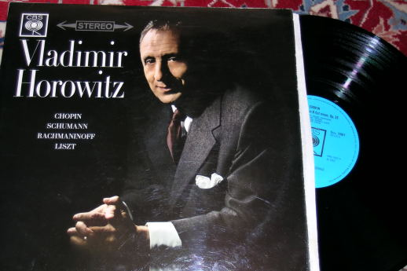 CBS 72067 Chopin sonata n2 + Schumann, Rachmaninoff, Liszt Vladimir Horowitz Sound eng. ? The “funeral march” of the Chopin sonata is really great. |
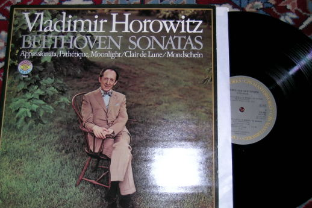 CBS 76892 Beethoven Appassionata, Pathetique and Moonlight sonatas Vladimir Horowitz Sound eng. ? Another great record from this very loved pianist. |
|
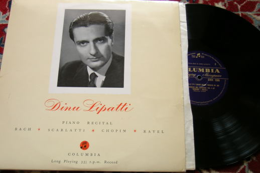 COLUMBIA 33CX1386 (MONO) Bach, Scarlatti, Chopin, Ravel Dinu Lipatti Sound eng. ? Speaking on pianists... this is the one that I and my wife love most. He was an angel visiting our planet for a too short time! It was Lipatti who “discovered” how to play Bach at the piano. His virtuoso Alborada del Gracioso was never equally repeated... |
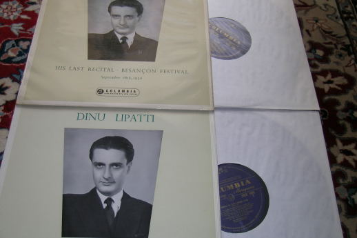 COLUMBIA 33CX1499-50 (MONO) “Last recital” Bach, Mozart, Schubert, Chopin Sound eng. ? This is great and tragic Besancon concert, made a few days before to die. It is probably one of the greatest music testament of the recording history. |
|
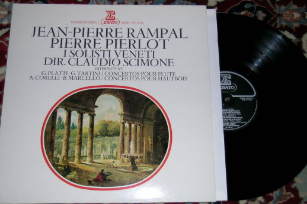 ERATO STU70474 Corelli, Marcello, Platti, Tartini oboe and flute concertoes Pierre Pierlot and Jean-Pierre Rampal Claudio Scimone I Solisti Veneti Sound eng. P. Willemoes When I was a little child my parents used the Marcello oboe concerto as lullaby. That is probably why I like it so much. |
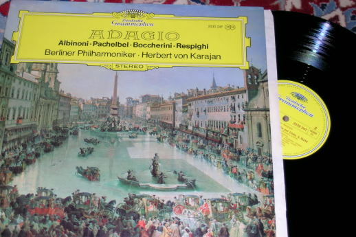 DGG 2530247 Herbert Von Karajan Berliner Philharmoniker Sound. Eng. G. Hermanns Some very nice baroc music played by the Berliner big orchestra. No original instruments! |
|
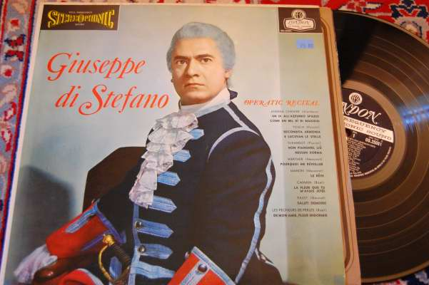 DECCA LONDON OS.25081 AA.VV. “Operatic Recital” Giuseppe Di Stefano Sound eng. ? My wife really like the italian tenor Di Stefano, in particular for the Puccini arias. I think that the “E lucevan le stelle” here recorded is very languid and tears taker. I have found it in the same shop where I have found the 3 Cornered Hat, a proper reason to visit Frisco! |
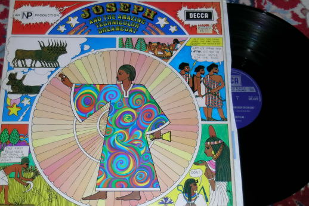 DECCA SKL4973 Andrew Lloyd Webber “Joseph and the amazing technicolor dreamcoat” Alan Dogget The Joseph Consortium Sound eng. B. Price If you like musicals then you probably already know this record. If not, try to find it and you will enjoy the Joseph story in a '68 style. |
|
Updated August 2007 |
To be continued? |
Tino © August 2007